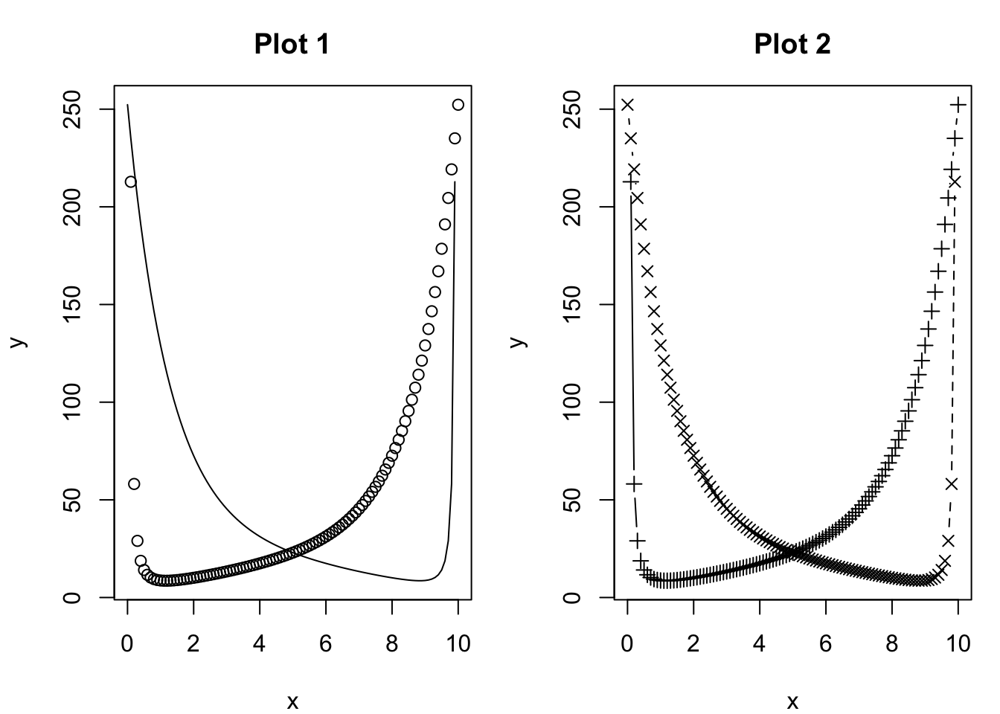
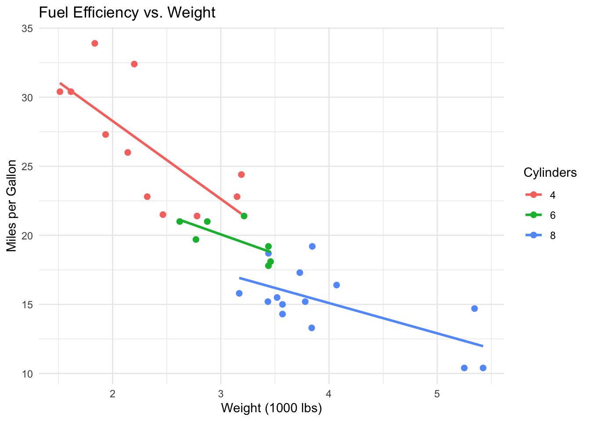
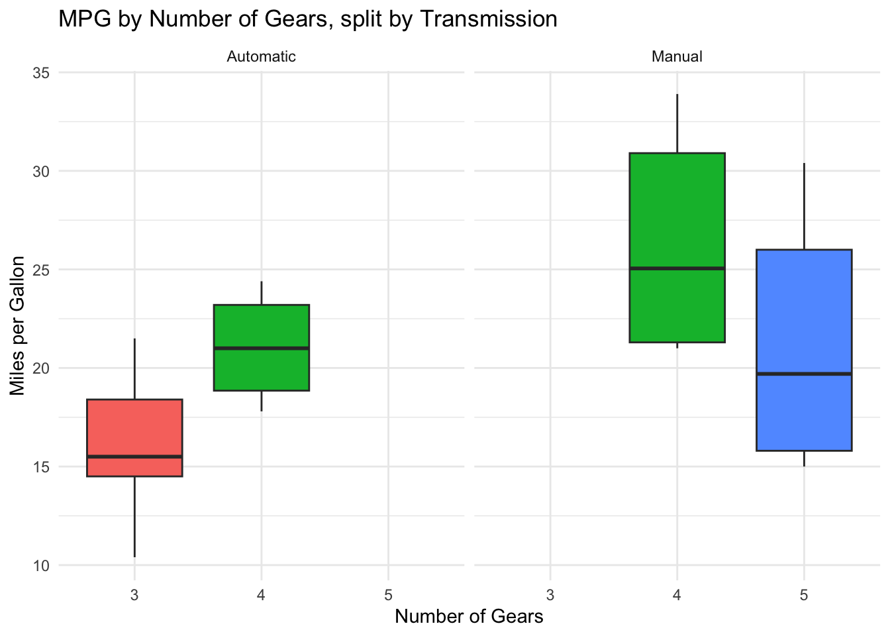

Code
a <- 1
a[1] 1Code
b <- 2:10
b[1] 2 3 4 5 6 7 8 9 10R’s basic data structure is the vector. A single number is just a vector of length one.
a <- 1
a[1] 1b <- 2:10
b[1] 2 3 4 5 6 7 8 9 10Two vectors can be joined together with c() (“combine”):
c <- c(a,b)
c [1] 1 2 3 4 5 6 7 8 9 10Arithmetic operators applied to a vector act element by element:
1/c [1] 1.0000000 0.5000000 0.3333333 0.2500000 0.2000000 0.1666667 0.1428571
[8] 0.1250000 0.1111111 0.1000000c^2 [1] 1 4 9 16 25 36 49 64 81 100c^2 + 1 [1] 2 5 10 17 26 37 50 65 82 101To apply an arbitrary function to every element of a vector, either the function is already vectorized (like log), or we can use sapply to apply it element-wise:
log(c) [1] 0.0000000 0.6931472 1.0986123 1.3862944 1.6094379 1.7917595 1.9459101
[8] 2.0794415 2.1972246 2.3025851sapply(c,log) [1] 0.0000000 0.6931472 1.0986123 1.3862944 1.6094379 1.7917595 1.9459101
[8] 2.0794415 2.1972246 2.3025851When two vectors are combined with an operator, R again works element by element. If the vectors have different lengths, the shorter one is recycled:
d <- (1:10)*10
d [1] 10 20 30 40 50 60 70 80 90 100c + d [1] 11 22 33 44 55 66 77 88 99 110c * d [1] 10 40 90 160 250 360 490 640 810 1000d ^ c [1] 1.000000e+01 4.000000e+02 2.700000e+04 2.560000e+06 3.125000e+08
[6] 4.665600e+10 8.235430e+12 1.677722e+15 3.874205e+17 1.000000e+20As a concrete example, here is the sample variance of c computed directly from its definition, and then with the built-in var function:
sum((c - mean(c))^2)/(length(c)-1)[1] 9.166667var(c)[1] 9.166667Elements of a vector are extracted with [ ], using either positions or a logical condition:
c [1] 1 2 3 4 5 6 7 8 9 10c[2][1] 2c[c(2,3)][1] 2 3c[c(3,2)][1] 3 2c[c > 5][1] 6 7 8 9 10The condition itself is a logical vector, which is often useful to inspect on its own:
c > 5 [1] FALSE FALSE FALSE FALSE FALSE TRUE TRUE TRUE TRUE TRUEc[c > 5 & c < 10][1] 6 7 8 9c[as.logical((c > 8) + (c < 3))][1] 1 2 9 10log(c) [1] 0.0000000 0.6931472 1.0986123 1.3862944 1.6094379 1.7917595 1.9459101
[8] 2.0794415 2.1972246 2.3025851c[log(c) < 2][1] 1 2 3 4 5 6 7A subset selected this way can also be assigned new values, which modifies the original vector in place:
c[log(c) < 2] <- 3
c [1] 3 3 3 3 3 3 3 8 9 10seq generalizes the : operator, letting us control the step size or the number of points, and it behaves more predictably in edge cases:
seq(0,10,by=1) [1] 0 1 2 3 4 5 6 7 8 9 10seq(0,10,length=20) [1] 0.0000000 0.5263158 1.0526316 1.5789474 2.1052632 2.6315789
[7] 3.1578947 3.6842105 4.2105263 4.7368421 5.2631579 5.7894737
[13] 6.3157895 6.8421053 7.3684211 7.8947368 8.4210526 8.9473684
[19] 9.4736842 10.00000001:10 [1] 1 2 3 4 5 6 7 8 9 10For example, 1:n does not produce an empty sequence when n is 0 – it silently counts backwards, which is a common source of bugs in loops:
n <- 0
1:n[1] 1 0#seq(1,n,by=1)
#Error in seq.default(1, n, by = 1) : wrong sign in 'by' argumentrep repeats a vector, either as a whole or element by element:
c<- 1:5
c[1] 1 2 3 4 5rep(c,5) [1] 1 2 3 4 5 1 2 3 4 5 1 2 3 4 5 1 2 3 4 5 1 2 3 4 5rep(c,each=5) [1] 1 1 1 1 1 2 2 2 2 2 3 3 3 3 3 4 4 4 4 4 5 5 5 5 5Character vectors are created and combined just like numeric ones. paste and paste0 glue strings together, optionally recycling shorter arguments:
A <- c("a","b","c")
A[1] "a" "b" "c"paste("a","b",sep="")[1] "ab"paste0("a","b",sep="")[1] "ab"paste(A,c("d","e"))[1] "a d" "b e" "c d"paste(A,10)[1] "a 10" "b 10" "c 10"paste(A,10,sep="")[1] "a10" "b10" "c10"paste0(A,10)[1] "a10" "b10" "c10"paste0(A,1:10) [1] "a1" "b2" "c3" "a4" "b5" "c6" "a7" "b8" "c9" "a10"sprintf gives C-style formatted strings, which is convenient for generating file names in a loop:
sprintf("unit%g.pdf", 1:10) [1] "unit1.pdf" "unit2.pdf" "unit3.pdf" "unit4.pdf" "unit5.pdf"
[6] "unit6.pdf" "unit7.pdf" "unit8.pdf" "unit9.pdf" "unit10.pdf"sprintf("unit%g.%s", 1:10, "html") [1] "unit1.html" "unit2.html" "unit3.html" "unit4.html" "unit5.html"
[6] "unit6.html" "unit7.html" "unit8.html" "unit9.html" "unit10.html"grep returns the positions of the elements matching a pattern, which can then be used to subset a character vector – here we list files in the working directory and pick out ones with particular extensions or prefixes:
filelist <- list.files(); filelist [1] "afig.pdf"
[2] "alist.RDS"
[3] "comparith.qmd"
[4] "intro.qmd"
[5] "mtcars.csv"
[6] "mtcars.RData"
[7] "mtcars2.csv"
[8] "normmodel.bug"
[9] "numbers.txt"
[10] "regmodel.bug"
[11] "unit01_introduction_longer_cache"
[12] "unit01_introduction_longer_files"
[13] "unit01_introduction_longer.html"
[14] "unit01_introduction_longer.qmd"
[15] "unit01_introduction_longer.rmarkdown"
[16] "unit01_introduction_longer.Rmd"
[17] "unit02_comparith.html"
[18] "unit02_comparith.qmd"
[19] "unit02_comparith.Rmd"
[20] "unit03_sampling_basics_files"
[21] "unit03_sampling_basics.html"
[22] "unit03_sampling_basics.qmd"
[23] "unit03_sampling_basics.Rmd"
[24] "unit04_simulation_cache"
[25] "unit04_simulation_files"
[26] "unit04_simulation.html"
[27] "unit04_simulation.qmd"
[28] "unit04_simulation.Rmd"
[29] "unit05_MLE1_cache"
[30] "unit05_MLE1_files"
[31] "unit05_MLE1.html"
[32] "unit05_MLE1.qmd"
[33] "unit05_MLE1.Rmd"
[34] "unit06_MLEm_cache"
[35] "unit06_MLEm_files"
[36] "unit06_MLEm.html"
[37] "unit06_MLEm.qmd"
[38] "unit06_MLEm.Rmd"
[39] "unit07_em_cache"
[40] "unit07_em_files"
[41] "unit07_em.html"
[42] "unit07_em.qmd"
[43] "unit07_em.Rmd"
[44] "unit08_integral.html"
[45] "unit08_integral.qmd"
[46] "unit08_integral.Rmd"
[47] "unit09_laplace_cache"
[48] "unit09_laplace.qmd"
[49] "unit09_laplace.rmarkdown"
[50] "unit09_laplace.Rmd"
[51] "unit10_rejection_sampling.qmd"
[52] "unit10_rejection_sampling.Rmd"
[53] "unit11_importance_sampling.qmd"
[54] "unit11_importance_sampling.Rmd"
[55] "unit11_mcmc_intro.qmd"
[56] "unit11_mcmc_intro.Rmd"
[57] "unit12_gibbs.qmd"
[58] "unit12_gibbs.Rmd"
[59] "unit14_MHsampling.qmd"
[60] "unit14_MHsampling.Rmd"
[61] "unit16_stan.qmd"
[62] "unit16_stan.Rmd" filelist[grep( "*.pdf",filelist)][1] "afig.pdf"filelist[grep( "*.Rmd",filelist)] [1] "unit01_introduction_longer.Rmd" "unit02_comparith.Rmd"
[3] "unit03_sampling_basics.Rmd" "unit04_simulation.Rmd"
[5] "unit05_MLE1.Rmd" "unit06_MLEm.Rmd"
[7] "unit07_em.Rmd" "unit08_integral.Rmd"
[9] "unit09_laplace.Rmd" "unit10_rejection_sampling.Rmd"
[11] "unit11_importance_sampling.Rmd" "unit11_mcmc_intro.Rmd"
[13] "unit12_gibbs.Rmd" "unit14_MHsampling.Rmd"
[15] "unit16_stan.Rmd" unit.files <- filelist[grep( "^unit",filelist)]; unit.files [1] "unit01_introduction_longer_cache"
[2] "unit01_introduction_longer_files"
[3] "unit01_introduction_longer.html"
[4] "unit01_introduction_longer.qmd"
[5] "unit01_introduction_longer.rmarkdown"
[6] "unit01_introduction_longer.Rmd"
[7] "unit02_comparith.html"
[8] "unit02_comparith.qmd"
[9] "unit02_comparith.Rmd"
[10] "unit03_sampling_basics_files"
[11] "unit03_sampling_basics.html"
[12] "unit03_sampling_basics.qmd"
[13] "unit03_sampling_basics.Rmd"
[14] "unit04_simulation_cache"
[15] "unit04_simulation_files"
[16] "unit04_simulation.html"
[17] "unit04_simulation.qmd"
[18] "unit04_simulation.Rmd"
[19] "unit05_MLE1_cache"
[20] "unit05_MLE1_files"
[21] "unit05_MLE1.html"
[22] "unit05_MLE1.qmd"
[23] "unit05_MLE1.Rmd"
[24] "unit06_MLEm_cache"
[25] "unit06_MLEm_files"
[26] "unit06_MLEm.html"
[27] "unit06_MLEm.qmd"
[28] "unit06_MLEm.Rmd"
[29] "unit07_em_cache"
[30] "unit07_em_files"
[31] "unit07_em.html"
[32] "unit07_em.qmd"
[33] "unit07_em.Rmd"
[34] "unit08_integral.html"
[35] "unit08_integral.qmd"
[36] "unit08_integral.Rmd"
[37] "unit09_laplace_cache"
[38] "unit09_laplace.qmd"
[39] "unit09_laplace.rmarkdown"
[40] "unit09_laplace.Rmd"
[41] "unit10_rejection_sampling.qmd"
[42] "unit10_rejection_sampling.Rmd"
[43] "unit11_importance_sampling.qmd"
[44] "unit11_importance_sampling.Rmd"
[45] "unit11_mcmc_intro.qmd"
[46] "unit11_mcmc_intro.Rmd"
[47] "unit12_gibbs.qmd"
[48] "unit12_gibbs.Rmd"
[49] "unit14_MHsampling.qmd"
[50] "unit14_MHsampling.Rmd"
[51] "unit16_stan.qmd"
[52] "unit16_stan.Rmd" unit.pdf.files <- unit.files[grep("*.pdf", unit.files)]; unit.pdf.filescharacter(0)unit.html.files <- unit.files[grep("*.html", unit.files)]; unit.html.files[1] "unit01_introduction_longer.html" "unit02_comparith.html"
[3] "unit03_sampling_basics.html" "unit04_simulation.html"
[5] "unit05_MLE1.html" "unit06_MLEm.html"
[7] "unit07_em.html" "unit08_integral.html" R has special values for results that are not ordinary numbers. 0/0 is “not a number” (NaN), log(0) is negative infinity (not finite), and NA marks a missing value:
a <- 0/0
a[1] NaNis.nan(a)[1] TRUEb <- log(0)
b[1] -Infis.finite(b)[1] FALSEc <- c(0:4,NA)
c[1] 0 1 2 3 4 NAis.na(c)[1] FALSE FALSE FALSE FALSE FALSE TRUEA matrix is created either by filling in values directly or by reshaping a vector into rows and columns. By default values are filled by column; byrow = TRUE fills by row instead:
A <- matrix(0,4,5)
A [,1] [,2] [,3] [,4] [,5]
[1,] 0 0 0 0 0
[2,] 0 0 0 0 0
[3,] 0 0 0 0 0
[4,] 0 0 0 0 0A <- matrix(1:20,4,5)
B <- matrix(1:20,4,5,byrow = T)Just like vectors, matrices can be subset with [rows, columns], and the resulting subset can be assigned new values:
D <- A[c(1,4),c(2,3)]
A[c(1,4),c(2,3)] <- 1
A[c(1,4),c(2,3)] <- 101:104
A[c(1,4),c(2,3)] <- matrix (1001:1004, 2,2)
a<- A[4,]
b<- A[3:4,]
A[1,1][1] 1Note that extracting a single row or column normally drops the matrix dimension and returns a plain vector; drop = FALSE keeps it as a matrix:
a2<- A[4,, drop = FALSE]array is another way to build a matrix (or higher-dimensional array) from a vector. cbind and rbind glue matrices together by columns or by rows:
A2 <- array(1:20,dim=c(4,5))
A2 [,1] [,2] [,3] [,4] [,5]
[1,] 1 5 9 13 17
[2,] 2 6 10 14 18
[3,] 3 7 11 15 19
[4,] 4 8 12 16 20cbind(A,A2) [,1] [,2] [,3] [,4] [,5] [,6] [,7] [,8] [,9] [,10]
[1,] 1 1001 1003 13 17 1 5 9 13 17
[2,] 2 6 10 14 18 2 6 10 14 18
[3,] 3 7 11 15 19 3 7 11 15 19
[4,] 4 1002 1004 16 20 4 8 12 16 20rbind(A,A2) [,1] [,2] [,3] [,4] [,5]
[1,] 1 1001 1003 13 17
[2,] 2 6 10 14 18
[3,] 3 7 11 15 19
[4,] 4 1002 1004 16 20
[5,] 1 5 9 13 17
[6,] 2 6 10 14 18
[7,] 3 7 11 15 19
[8,] 4 8 12 16 20t() transposes a matrix. Arithmetic operators again act element by element, and when a matrix is combined with a shorter vector, the vector is recycled down the columns:
t(A) [,1] [,2] [,3] [,4]
[1,] 1 2 3 4
[2,] 1001 6 7 1002
[3,] 1003 10 11 1004
[4,] 13 14 15 16
[5,] 17 18 19 20A [,1] [,2] [,3] [,4] [,5]
[1,] 1 1001 1003 13 17
[2,] 2 6 10 14 18
[3,] 3 7 11 15 19
[4,] 4 1002 1004 16 20A + 1 [,1] [,2] [,3] [,4] [,5]
[1,] 2 1002 1004 14 18
[2,] 3 7 11 15 19
[3,] 4 8 12 16 20
[4,] 5 1003 1005 17 21x <- 1:5
A*x [,1] [,2] [,3] [,4] [,5]
[1,] 1 5005 4012 39 34
[2,] 4 6 50 56 54
[3,] 9 14 11 75 76
[4,] 16 3006 2008 16 100The logic here is that R first coerces the matrix A into a vector by joining its columns, and then repeats the shorter vector x as many times as needed to match that length. This means the recycling only lines up neatly with the columns when the vector’s length divides the number of rows – as in the next example, where x has length 3 and A has 4 rows:
x <- 1:3
A*xWarning in A * x: longer object length is not a multiple of shorter object
length [,1] [,2] [,3] [,4] [,5]
[1,] 1 2002 3009 13 34
[2,] 4 18 10 28 54
[3,] 9 7 22 45 19
[4,] 4 2004 3012 16 40A^2 [,1] [,2] [,3] [,4] [,5]
[1,] 1 1002001 1006009 169 289
[2,] 4 36 100 196 324
[3,] 9 49 121 225 361
[4,] 16 1004004 1008016 256 400Matrix multiplication uses %*%, and solve computes either a matrix inverse or the solution of a linear system:
A <- matrix(sample(1:20),4,5)
A [,1] [,2] [,3] [,4] [,5]
[1,] 11 3 10 18 6
[2,] 8 16 17 5 13
[3,] 15 2 4 9 14
[4,] 7 20 12 1 19B <- matrix(sample(1:20),5,4)
B [,1] [,2] [,3] [,4]
[1,] 20 1 7 12
[2,] 10 5 2 9
[3,] 17 13 18 11
[4,] 8 14 6 3
[5,] 4 15 19 16C <- A %*% B
C [,1] [,2] [,3] [,4]
[1,] 588 498 485 419
[2,] 701 574 671 650
[3,] 516 413 501 493
[4,] 628 562 672 703solve(C) [,1] [,2] [,3] [,4]
[1,] 0.03676667 -0.176111929 0.18965578 0.00791923
[2,] 0.00948680 -0.001660577 -0.02417453 0.01283421
[3,] -0.09948086 0.448717330 -0.43311801 -0.05185861
[4,] 0.05466584 -0.270279530 0.26392256 0.03365987To solve \(Cx = d\) for \(x\), it is both faster and numerically more stable to call solve(C, d) directly than to explicitly compute the inverse first:
x <- 1:4
d <- C %*% x
solve(C,d) [,1]
[1,] 1
[2,] 2
[3,] 3
[4,] 4#altenative way (but not recommended)
solve(C) %*% d [,1]
[1,] 1
[2,] 2
[3,] 3
[4,] 4The singular value decomposition \(C = UDV'\) gives another route to quantities like the determinant, here obtained as the product of the singular values:
svd.C <- svd(C)
svd.C$d
[1] 2294.403945 140.559249 31.622988 1.273558
$u
[,1] [,2] [,3] [,4]
[1,] -0.4339600 0.81200510 0.3596573 0.15156848
[2,] -0.5671703 0.01766514 -0.4277062 -0.70361439
[3,] -0.4203919 -0.09590683 -0.5814575 0.68991280
[4,] -0.5597028 -0.57544551 0.5912877 0.07729244
$v
[,1] [,2] [,3] [,4]
[1,] -0.5322386 0.5618595 -0.53906690 0.33232931
[2,] -0.4488498 0.3664535 0.81484245 -0.01665817
[3,] -0.5133266 -0.2068375 -0.20623937 -0.80695688
[4,] -0.5017487 -0.7122106 0.05388861 0.48795525prod(svd.C$d)[1] 12988257A data frame stores columns of possibly different types (numbers, factors, strings) side by side, indexed by name. Columns can be pulled out with [, ], by name, or with $:
name <- c("john","peter","jennifer")
gender <- factor(c("m","m","f"))
hw1 <- c(60,60,80)
hw2 <- c(40,50,30)
grades <- data.frame(name,gender,hw1,hw2)
grades[,"gender"][1] m m f
Levels: f mgrades[,2][1] m m f
Levels: f mRows and columns can be selected simultaneously, and subset offers a more readable way to filter rows by a condition on the columns:
grades[1,2][1] m
Levels: f mgrades[,"name"][1] "john" "peter" "jennifer"grades$name[1] "john" "peter" "jennifer"grades[grades$gender=="m",]subset (grades, hw1 >60)grades[,"hw1"][1] 60 60 80tapply splits a column into groups defined by another column and applies a function within each group – here, computing the mean of hw1 for each gender:
tapply(grades[,"hw1"], grades[,"gender"],mean) f m
80 60 Unlike a vector, a list can hold components of different types and sizes – here a numeric vector, a matrix, and a character vector:
a <- 1:10
b <- matrix(1:10,2,5)
c <- c("name1","name2")
alst <- list(aa=a,b=b,c=c)
names (alst)[1] "aa" "b" "c" str(alst)List of 3
$ aa: int [1:10] 1 2 3 4 5 6 7 8 9 10
$ b : int [1:2, 1:5] 1 2 3 4 5 6 7 8 9 10
$ c : chr [1:2] "name1" "name2"A component of a list is accessed by name with $, or by position with double brackets [[ ]]:
alst$aa [1] 1 2 3 4 5 6 7 8 9 10alst[[2]] [,1] [,2] [,3] [,4] [,5]
[1,] 1 3 5 7 9
[2,] 2 4 6 8 10Two lists can be joined into one with c(), just as with vectors:
blst <- list(d=2:10*10)
ablst <- c(alst,blst)
ablst$aa
[1] 1 2 3 4 5 6 7 8 9 10
$b
[,1] [,2] [,3] [,4] [,5]
[1,] 1 3 5 7 9
[2,] 2 4 6 8 10
$c
[1] "name1" "name2"
$d
[1] 20 30 40 50 60 70 80 90 100R can read plain numbers with scan, and tabular data with read.csv. Objects can then be written back to disk in several formats:
a<- scan (text = "3 4 5.3 3")
numbers <- scan (file="numbers.txt")
mtcars <- read.csv ("mtcars.csv")save/load store and restore one or more R objects together in a single .RData file. Note that load silently overwrites any existing objects with the same names:
save (mtcars, numbers, file = "mtcars.RData")
load ("mtcars.RData")A data frame can also be written out as a plain csv file, and any single R object can be saved to its own .RDS file:
write.csv(mtcars, file = "mtcars2.csv")
alist <- list (A = rnorm (100), B = letters[1:10])
saveRDS(alist, file = "alist.RDS")
blist <- readRDS("alist.RDS")
## note that a list is not erased by readRDS
identical(alist, blist)[1] TRUEWe can package a computation into a reusable function. Here is a hand-written function that finds the maximum value of a numeric vector and the position at which it occurs:
find.max <- function(x)
{
n <- length(x)
x.m <- x[1]
ix.m <- 1
if(n > 1)
{
for( i in seq(2,n,by=1) )
{
if(x[i] > x.m)
{
x.m <- x[i]
ix.m <- i
}
}
}
#return the maximum value and the index
list(max=x.m,index.max=ix.m)
}We can now call find.max just like any built-in function, and compare its result with R’s own built-in tools for the same task (max, which.max, order, sort):
a <- rnorm (5); a[1] -0.6019658 1.6154572 -0.2754973 0.3720273 1.2991888find.max(a)$max
[1] 1.615457
$index.max
[1] 2max(a)[1] 1.615457which.max(a)[1] 2order (a)[1] 1 3 4 5 2sort (a)[1] -0.6019658 -0.2754973 0.3720273 1.2991888 1.6154572sort(a, index.return=TRUE)$x
[1] -0.6019658 -0.2754973 0.3720273 1.2991888 1.6154572
$ix
[1] 1 3 4 5 2Base R plotting builds a figure with a sequence of calls: plot starts a new plot, and functions like points add to the current one. Plotting parameters such as the layout of multiple panels are set with par:
demofun1 <- function(x)
{
( 1 + 2*x^2 + 3*x^3 + exp(x) ) / x^2
}
demofun2 <- function(x)
{
( 1 + 2*(10-x)^2 + 3*(10-x)^3 + exp(10-x) ) / (10-x)^2
}
# plot in R windows (for quick look)
#specify plotting parameters
par(mfrow=c(1,2), mar = c(4,4,3,1))
x <- seq(0,10,by=0.1)
#make "Plot 1"
plot(x, demofun1(x), type="p", pch = 1, ylab="y", main="Plot 1")
#add another line to "Plot 1"
points(x, demofun2(x), type="l", lty = 1)
#make "plot 2"
plot(x, demofun1(x), type="b", pch = 3, lty=1, ylab="y", main="Plot 2")
#add another line to "Plot 2"
points(x, demofun2(x), type="b", pch = 4, lty = 2)
The same sequence of calls can be redirected into a file instead of the screen by opening a graphics device such as pdf() before plotting, and closing it with dev.off() afterwards:
# save plot in a file (for publication)
pdf ("afig.pdf", height=4.8, width=10)
#specify plotting parameters
par(mfrow=c(1,2), mar = c(4,4,3,1))
x <- seq(0,10,by=0.1)
#make "Plot 1"
plot(x, demofun1(x), type="p", pch = 1, ylab="y", main="Plot 1")
#add another line to "Plot 1"
points(x, demofun2(x), type="l", lty = 1)
#make "plot 2"
plot(x, demofun1(x), type="b", pch = 3, lty=1, ylab="y", main="Plot 2")
#add another line to "Plot 2"
points(x, demofun2(x), type="b", pch = 4, lty = 2)
dev.off()quartz_off_screen
2 Base graphics build a plot with a sequence of side-effecting calls, as above. The ggplot2 package instead builds a plot declaratively, by mapping columns of a data frame to visual properties (“aesthetics”) and adding layers with +. The gt package does the analogous thing for tables: it turns a data frame into a polished, publication-ready table instead of a plain printout.
library(ggplot2)Warning: package 'ggplot2' was built under R version 4.5.2library(gt)Warning: package 'gt' was built under R version 4.5.2mtcars <- read.csv("mtcars.csv")We map wt (weight) to the x-axis, mpg (fuel efficiency) to the y-axis, and the number of cylinders cyl to color, then add a fitted regression line for each group with geom_smooth:
mtcars$cyl <- factor(mtcars$cyl)
ggplot(mtcars, aes(x = wt, y = mpg, color = cyl)) +
geom_point(size = 2) +
geom_smooth(method = "lm", se = FALSE) +
labs(
title = "Fuel Efficiency vs. Weight",
x = "Weight (1000 lbs)",
y = "Miles per Gallon",
color = "Cylinders"
) +
theme_minimal()`geom_smooth()` using formula = 'y ~ x'
Layers combine freely: here a boxplot of mpg by number of gears is split into one panel per transmission type (am) using facet_wrap:
mtcars$am <- factor(mtcars$am, labels = c("Automatic", "Manual"))
ggplot(mtcars, aes(x = factor(gear), y = mpg, fill = factor(gear))) +
geom_boxplot(show.legend = FALSE) +
facet_wrap(~ am) +
labs(
title = "MPG by Number of Gears, split by Transmission",
x = "Number of Gears",
y = "Miles per Gallon"
) +
theme_minimal()
We first use base R (aggregate) to compute, for each cylinder count, the average and standard deviation of mpg and hp. Piping the resulting data frame into gt() turns it into a formatted table with a title, readable column labels, and rounded numbers:
summary.tbl <- aggregate(
cbind(mpg, hp) ~ cyl,
data = mtcars,
FUN = function(x) c(mean = mean(x), sd = sd(x))
)
summary.tbl <- do.call(data.frame, summary.tbl)
names(summary.tbl) <- c("cyl", "mpg_mean", "mpg_sd", "hp_mean", "hp_sd")
summary.tbl |>
gt(rowname_col = "cyl") |>
tab_header(
title = "Engine Performance by Cylinder Count",
subtitle = "Mean and standard deviation of mpg and horsepower"
) |>
fmt_number(columns = -cyl, decimals = 1) |>
cols_label(
mpg_mean = "Mean MPG",
mpg_sd = "SD MPG",
hp_mean = "Mean HP",
hp_sd = "SD HP"
) |>
tab_spanner(label = "Miles per Gallon", columns = c(mpg_mean, mpg_sd)) |>
tab_spanner(label = "Horsepower", columns = c(hp_mean, hp_sd)) |>
tab_stubhead(label = "Cylinders")| Engine Performance by Cylinder Count | ||||
| Mean and standard deviation of mpg and horsepower | ||||
| Cylinders |
Miles per Gallon
|
Horsepower
|
||
|---|---|---|---|---|
| Mean MPG | SD MPG | Mean HP | SD HP | |
| 4 | 26.7 | 4.5 | 82.6 | 20.9 |
| 6 | 19.7 | 1.5 | 122.3 | 24.3 |
| 8 | 15.1 | 2.6 | 209.2 | 51.0 |